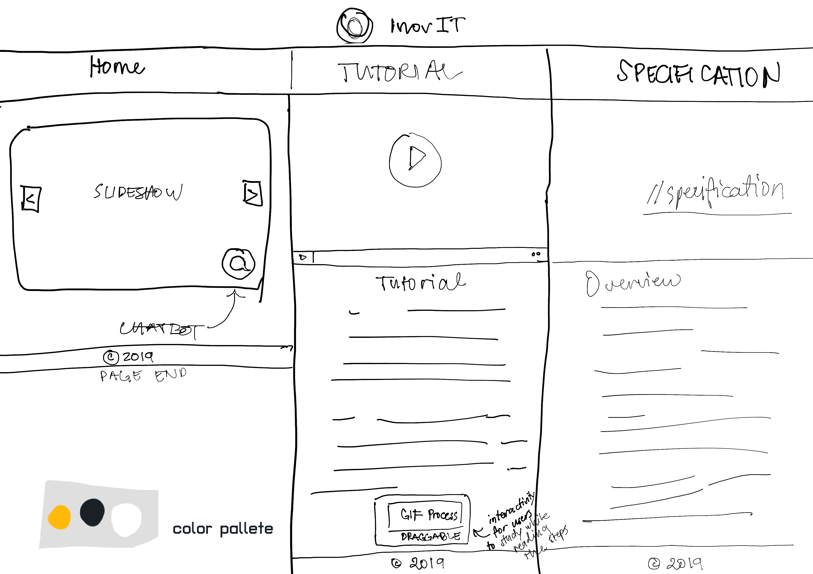

OVERVIEW
UNVEIL YOUR POTENTIALInovIT aims to produce a website that showcases streaming media. Streaming media is media that is consumed (read, heard, viewed) while it is being delivered. Examples of streaming video and audio include Youtube, internet radio and television broadcasts, and corporate webcasts.It is growing more prominent on more websites than ever before; without streaming media in a website, it is inferior.
OBJECTIVES
The company aims to do the following:- To expand its business on streaming media.
- Demonstrate advantages in using streaming media on websites.
- Bringing accessibility of high-quality streaming medias to all users.
KEY AUDIENCES
It is targeted to audiences who
- lacks time;
- has slow-speed bandwidth;
- lacks file storage;
But with streaming,
- it is delievered on-the-spot;
- time isn't an issue;
- many people can access at the same time;
- gives users more control and immediate access over file;
- uses 'streaming server';
- always saves amd limited by user's bandwidth;
- and allows encoding of multiple copies of the same video in different data rates;
It is also beneficial to content creators, organizations, news, sports, radios, etc. because it offers more copyright protection on their streaming medias.
CONTENT STRUCTURE
The content is arranged to show the tip of the iceberg in showcasing a streaming media website for InovIT.
First is the 'Home' page with a slideshow and a chatbot named Ivex , second is the 'Tutorial' page containing the streaming video media and written steps of digital image retouching, lastly is this 'Specification' page, which documents the audiences in mind, purpose of this website, and the design created.
DESIGN
The picture shown above is the inital design for this website and drawn in iPad Pro. The minimalist lay-out and vertical content is implemented so that the audiences will navigate the website with ease. The color pallete is yellow, black, and white.
FUCTIONALITY
In the 'Home' page, a slideshow is also displayed in the 'Home' page with 3 pictures for 3 different pages and a chatbot called Ivex, he is a simple AI created through Javascript. The messages you can type to him are the following:
- help
- hi, hello, howdy
- name
- tutorial, photoshop, video
- specification, about, details
- steps, step
- home, house, front
- dogs, dog, canines, puppy, puppies
- husky, samoyed, pomeranian
- origins, origin, created, creator
The 'Tutorial' page has an embedded, high-quality streaming video and a pocket-sized, draggable GIF process at the end of the page for users to use as reference as they go through the written steps. Last but not least is the 'Specification' page containing the overview and objectives of InovIT, process in creating the website, and more.
TECHNICAL DETAILS
| "Digital Image Retouching for PS CC 2019" | Description |
|---|---|
| VIDEO |
|
| AUDIO |
|
| ORIGIN |
|
| FILE |
|
| Slideshow | Description |
|---|---|
| Picture details |
|
TIME SCALES
| Date | Description |
|---|---|
| Nov. 8 - 14 2019 | Digital editing, video editing, and audio recording of 'Digital Image Retouching' video using Adobe Photoshop CC 2019 and Adobe Premiere Pro 2019. |
| Nov. 18 - Dec. 6 2019 |
- Created InovIT Streaming media website using HTML, CSS, and Javascript languages and writing on Visual Studio Code.
|
REFERENCES
- A&T (n.d.) Retrieved December 5, 2019, from https://www.atnetindia.net/blog/technology-era.
- Grimsrud, A. (2016, December 22). CODEPEN: Windows 10 UI titlebar. Retrieved December 5, 2016, from https://codepen.io/agrimsrud/pen/WGgRPP.
- Landgreen CODEPEN: Chatbot Template. (2016, October 19). Retrieved December 5, 2019, from https://www.w3schools.com/w3css/w3css_slideshow.asp.
- Mitchell, B. (2018, November 26). What Is Streaming Video and Media? Retrieved December 5, 2019, from https://www.lifewire.com/streaming-video-media-817482.
- Using CSS for a fade-in effect on page load. (2012, July 26). Retrieved December 5, 2019, from https://stackoverflow.com/questions/11679567/using-css-for-a-fade-in-effect-on-page-load.
- W3Schools. (2019). CSS slideshow. Retrieved December 5, 2019, from https://www.w3schools.com/w3css/w3css_slideshow.asp.
- W3Schools. (2019). W3School: CSS Tutorial. Retrieved December 5, 2019, from https://www.w3schools.com/css/default.asp.
- W3Schools. (2019). W3School: CSS Button. Retrieved December 5, 2019, from https://www.w3schools.com/css/css3_buttons.asp.
- W3Schools. (2019). W3School: CSS Animation. Retrieved December 5, 2019, from https://www.w3schools.com/w3css/w3css_animate.asp.
- W3Schools. (2019). W3School: HTML Tutorial. Retrieved December 5, 2019, from https://www.w3schools.com/html/default.asp.
- W3Schools. (2019). How TO - Create a Draggable HTML Element. Retrieved December 5, 2019, from https://www.w3schools.com/howto/howto_js_draggable.asp.
- W3Schools. (2019). Style visibility Property. Retrieved December 5, 2019, from https://www.w3schools.com/jsref/prop_style_visibility.asp.
- W3Schools Javascript Tutorial. (2019). Retrieved December 6, 2019, from https://www.w3schools.com/js/default.asp.
- W3Schools. (2019). HTML Tables. Retrieved December 5, 2019, from https://www.w3schools.com/html/html_tables.asp.
WEBSITE CREATOR

Amanda Patricia D. Viray
is a dignified web designer and programmer for delivering innovative media, enterntainment, and creative industries' websites. She has graduated from the University of Newcastle with Bachelor of Information Technology, majoring in Interactive Media.